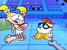

Hermano
 De: La Frikipedia, la enciclopedia extremadamente seria.
De: La Frikipedia, la enciclopedia extremadamente seria.

|
La información contenida en este artículo es una mínima parte de su jugo total, así que ponte los guantes, saca el tupperwere y empieza a exprimir el tema. Si lo haces serás recompensado con una galleta en almíbar y algo más.
|
Para otros usos de este término/definición/cosa, véase Hermana.
El hermano es una persona que supuestamente ha nacido de tu propia madre (aunque siempre puedes chantajearle con que es adoptado). Esta persona se dedica durante toda su vida a arruinarte la tuya.
La definicion de hermano tiene muchas variables. La mas comun es hijo de puta que te amarga la vida y que ojalá no hubiera nacido, pero hay muchas variables. Vamos a escuhar unas cuantas:
- Papa: No critiques a tu hermano, es una persona mejor que tú.

que adorable pareja de hermanos.
- Profesor: ¡Ojala estudiras como tu hermano!
- Cura: Todos somos hermanos. (Nota: ¡Que jodido que seria el mundo entonces!)
Clasificación
Tecnicmente todos los hemranos son unas mierdas que no sirven pa nada, pero como tengo pereza sólo existen 4 tipos en realidad:
- El perfectini: el que siempre es mejor que tu follando, tus amigas estan loquitas por el y hasta el mas maricón de mundo lo quiere, tiene mejor móvil y ordenador que tú (de paso tu no tienes pc), tus papis lo quieren más por que tiene mejor notas que tu (aunque en realidad se acostó con el profe de matematicas por la nota); en si es detestable y peor: se la da de tu mejor amigo, te cuida y protege pero te roba la novia o el novio
(si es gay)
- El pijo: el
puto arrecho gay que habla peor que Chavez y tiene todas las cosas que tu no. Es el clon del perfectini pero tiene la inteligencia mas baja, en otras palabras tú (osea tu) si tienes ese tipo de hermanos eres para él un Mini-me de L.
 Esta si que es una molestia de hermana.
- El destructor inteligente: su nombre cientifico es INTELITECUKI DOLORUSDECULIS LUCITIS, todo su IQ lo usa para destruir tus cosas y sueños al estilo Osama Bin Laden. Hay que tenerles mello, muuuuuuuuuucho mello. Son horrorosos y son los que tienen la cara llena de granosm por eso lo de horrendos. Bueno, uno que otro, de todos modos ese es tu hermano por eso gobiernan el 50% de todos los hermanos en el mundo. Siempre son mas débiles que tu y siempre te amenazan con una bomba o publica en youtube algo vergonzoso.
- El acaparador: el que toda su niñez ha sacado buenas notas y ha sido el preferido de mami porque sabe que así en el futuro lo querrán más que a ti. Si estás usando la PC basta con que le diga a mamá que le toca a él y ella le dira que si porque tu eres
una mierda alguien menos importante. Asi pasa con todo lo que tienes, una palabra suya bastará para sanarte para que le den todo lo tuyo.
- El genial: es muy guay y nada mas. Son muy pocos ejemplares en el mundo, y si lo tienes es aquel con la banda de rock y la novia con pinta de prosti pero nunca lo tendras. Si lo tienes mal por ti porque es mas cool
(aprovecha y róbale la novia)
Un grupo de hermanos sacando la parte negra de los pitufos
- El pelmazo: monos, inocentes, mameros... el que mas abunda en el mundo. Con mami delante, el niño mas bueno del mundo. Amable, simpatico... fantabuloso. Detrás, preparado para meterte cuchilladas traperas y echarte la culpa de todo. Es el mas peligroso, ya que es muy difícil de pillar... pero luego tu puedes vengarte cuando te pida que le hagas algo, como por ejemplo, juegos de DS.
- El pringao: Tu eres los de arriba. El es el pobre. Si son 3 hermanos es el mediano, si no el pequeño. Siempre te odia y te dice: Deberias sentirte orgulloso. En el colegio no tiene amigos. Bueno, tu lo unico bueno que tienes si eres hermano de este tipo es que vas a frikipedia.
Dan penita deberías ser mas bueno con el
- El simpático: Este esta en peligro de extincion. Te hace los deberes y te echas una partidita con la Play Station. En navidades os regalan una DS/PSP a los 2 y jugais de forma inalambrica. Jamás te quitara el ordenador por que lo usa desde otro y en Habbo os dedicais a matar bebes juntos. Estan en peligro de extincion
(eso ya lo he dicho)
Variaciones
Existen variaciones de hermanos. Vamos a hacer una lista:
- Hermano menor: No te suelta en todo el dia, siempre esta allí detras con su voz chillona. Es especialmente molesto cuando estás jugando a la plei y no deja de sugerirte que hagas cosas con él o le eches una partida al Pokemon de la Advance. Si tienes hermano pequeño, estás muerto. Mejor mátalo y tira su cadáver al río y podrás recuperar esa Game Boy que te hicieron regalarle "Porque es pequeño"
- Hermano mayor: Este hermano se dedica a joderte la vida, cada vez que puede te amenazan y tienes que aguantar sus mamadas, es mas bien pasota, no le importas nada, pero una envidia que puede llevarte a hacer cosas raras. Generalmente no vive en casa y si está casado comes con él los Sábados. Si eres chica, pegará a todos los novios que tengas, y si eres chico, simplemente te ignorará como la mierda que eres.
- Hermano gemelo: el problema llega cuando ese hermano que es igualito que tu, es MEJOR que tu, y empiezan a comparar. La misma ropa, las mismas ganas, la misma cara... pero no te frustres, suele ser tu mejor aliado en aprietos como cuando chocas el coche de papá. Aunque es jodído cuando quereis jugar en la plei a "uno de uno".
Frases célebres
- ¡Bien, es la decimocuarta vez que superas a tu hermano en matemáticas!
- ¡Ojala tu hermano estudiara como tu!
- Te daremos un regalo por estas notas, a tu hermano le quitamos los reyes magos.
- Déjame en paz y estropearle la vida díselo a tu hermano.
Autor(es):
- Fordus
- Venenofan
- Aque
- Alex2610
- Khazike Khashondo
- Azulejos
- El Sevillano
- Chucknorrisesdios
- MARrito
- Caño-kun
Frikipedia 2005-2016, Licencia
GFDL 1.2 - Extraído por FrikiLeaks